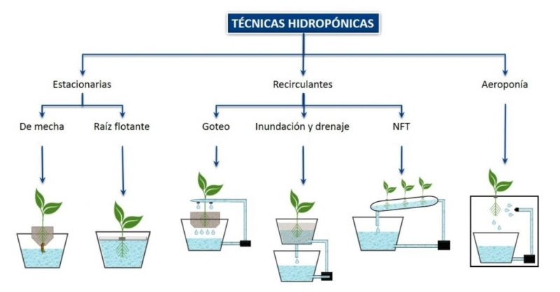

QUE ES LA HIDROPONIA
La hidroponia es una tecnica de cultivo que no requiere tierra, se base en nutrir las plantas a traves del agua con el uso de sales minerales que se disuelven en ella, existen diferentes técnicas que se aplican tanto en sistemas urbanos pequeños como en sistemas productivos de gran produccion de alimento.
